library(ISLR)
data(Hitters)
dim(Hitters)[1] 322 20The data records information about Major League Baseball from the 1986 and 1987 seasons. We wish to predict a baseball player’s Salary on the basis of various statistics associated with performance in the previous year.
To load the data, we need to install library ISLR
library(ISLR)
data(Hitters)
dim(Hitters)[1] 322 20Get information about the data
help(Hitters)Get a glimse at the data and numerical summary of the data
library(ggplot2)
library(tidyr)
library(dplyr)
glimpse(Hitters)Rows: 322
Columns: 20
$ AtBat <int> 293, 315, 479, 496, 321, 594, 185, 298, 323, 401, 574, 202, …
$ Hits <int> 66, 81, 130, 141, 87, 169, 37, 73, 81, 92, 159, 53, 113, 60,…
$ HmRun <int> 1, 7, 18, 20, 10, 4, 1, 0, 6, 17, 21, 4, 13, 0, 7, 3, 20, 2,…
$ Runs <int> 30, 24, 66, 65, 39, 74, 23, 24, 26, 49, 107, 31, 48, 30, 29,…
$ RBI <int> 29, 38, 72, 78, 42, 51, 8, 24, 32, 66, 75, 26, 61, 11, 27, 1…
$ Walks <int> 14, 39, 76, 37, 30, 35, 21, 7, 8, 65, 59, 27, 47, 22, 30, 11…
$ Years <int> 1, 14, 3, 11, 2, 11, 2, 3, 2, 13, 10, 9, 4, 6, 13, 3, 15, 5,…
$ CAtBat <int> 293, 3449, 1624, 5628, 396, 4408, 214, 509, 341, 5206, 4631,…
$ CHits <int> 66, 835, 457, 1575, 101, 1133, 42, 108, 86, 1332, 1300, 467,…
$ CHmRun <int> 1, 69, 63, 225, 12, 19, 1, 0, 6, 253, 90, 15, 41, 4, 36, 3, …
$ CRuns <int> 30, 321, 224, 828, 48, 501, 30, 41, 32, 784, 702, 192, 205, …
$ CRBI <int> 29, 414, 266, 838, 46, 336, 9, 37, 34, 890, 504, 186, 204, 1…
$ CWalks <int> 14, 375, 263, 354, 33, 194, 24, 12, 8, 866, 488, 161, 203, 2…
$ League <fct> A, N, A, N, N, A, N, A, N, A, A, N, N, A, N, A, N, A, A, N, …
$ Division <fct> E, W, W, E, E, W, E, W, W, E, E, W, E, E, E, W, W, W, W, W, …
$ PutOuts <int> 446, 632, 880, 200, 805, 282, 76, 121, 143, 0, 238, 304, 211…
$ Assists <int> 33, 43, 82, 11, 40, 421, 127, 283, 290, 0, 445, 45, 11, 151,…
$ Errors <int> 20, 10, 14, 3, 4, 25, 7, 9, 19, 0, 22, 11, 7, 6, 8, 0, 10, 1…
$ Salary <dbl> NA, 475.000, 480.000, 500.000, 91.500, 750.000, 70.000, 100.…
$ NewLeague <fct> A, N, A, N, N, A, A, A, N, A, A, N, N, A, N, A, N, A, A, N, …summary(Hitters) AtBat Hits HmRun Runs
Min. : 16.0 Min. : 1 Min. : 0.00 Min. : 0.00
1st Qu.:255.2 1st Qu.: 64 1st Qu.: 4.00 1st Qu.: 30.25
Median :379.5 Median : 96 Median : 8.00 Median : 48.00
Mean :380.9 Mean :101 Mean :10.77 Mean : 50.91
3rd Qu.:512.0 3rd Qu.:137 3rd Qu.:16.00 3rd Qu.: 69.00
Max. :687.0 Max. :238 Max. :40.00 Max. :130.00
RBI Walks Years CAtBat
Min. : 0.00 Min. : 0.00 Min. : 1.000 Min. : 19.0
1st Qu.: 28.00 1st Qu.: 22.00 1st Qu.: 4.000 1st Qu.: 816.8
Median : 44.00 Median : 35.00 Median : 6.000 Median : 1928.0
Mean : 48.03 Mean : 38.74 Mean : 7.444 Mean : 2648.7
3rd Qu.: 64.75 3rd Qu.: 53.00 3rd Qu.:11.000 3rd Qu.: 3924.2
Max. :121.00 Max. :105.00 Max. :24.000 Max. :14053.0
CHits CHmRun CRuns CRBI
Min. : 4.0 Min. : 0.00 Min. : 1.0 Min. : 0.00
1st Qu.: 209.0 1st Qu.: 14.00 1st Qu.: 100.2 1st Qu.: 88.75
Median : 508.0 Median : 37.50 Median : 247.0 Median : 220.50
Mean : 717.6 Mean : 69.49 Mean : 358.8 Mean : 330.12
3rd Qu.:1059.2 3rd Qu.: 90.00 3rd Qu.: 526.2 3rd Qu.: 426.25
Max. :4256.0 Max. :548.00 Max. :2165.0 Max. :1659.00
CWalks League Division PutOuts Assists
Min. : 0.00 A:175 E:157 Min. : 0.0 Min. : 0.0
1st Qu.: 67.25 N:147 W:165 1st Qu.: 109.2 1st Qu.: 7.0
Median : 170.50 Median : 212.0 Median : 39.5
Mean : 260.24 Mean : 288.9 Mean :106.9
3rd Qu.: 339.25 3rd Qu.: 325.0 3rd Qu.:166.0
Max. :1566.00 Max. :1378.0 Max. :492.0
Errors Salary NewLeague
Min. : 0.00 Min. : 67.5 A:176
1st Qu.: 3.00 1st Qu.: 190.0 N:146
Median : 6.00 Median : 425.0
Mean : 8.04 Mean : 535.9
3rd Qu.:11.00 3rd Qu.: 750.0
Max. :32.00 Max. :2460.0
NA's :59 What do you notice about the values of Salary?
We see that Salary is missing for 59 players, indicated as NA. How to handle missing data is outside the aim of the lecture. Thus, we will simply eliminate the missing data and we will work with the complete rows of the dataset. The na.omit() function removes all of the rows that have missing values in any variables.
## how many missing data?
sum(is.na(Hitters))[1] 59## clean the dataset
hitters <- na.omit(Hitters)
dim(hitters)[1] 263 20sum(is.na(hitters))[1] 0Boxplot the Salary on the original scale and log scale
df <- hitters %>%
mutate(log_Salary = log(Salary)) %>%
pivot_longer(cols = c(Salary, log_Salary),
names_to = "Scale",
values_to = "Value")
ggplot(df, aes(x = Scale, y = Value)) +
geom_boxplot(fill = "skyblue") +
facet_wrap(~Scale, scales = "free") +
labs(title = "Salary: Original vs Log Scale", y = "Value") +
theme_minimal()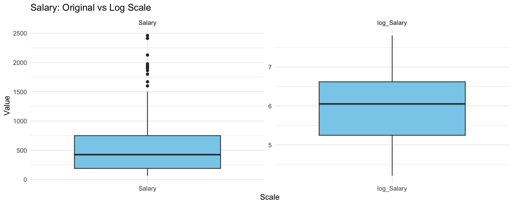
What do you notice? Which scale that we should choose?
Choose the logarithmic transformation.
hitters$Salary <- log(hitters$Salary)We wish to predict a baseball player’s Salary on the basis of various statistics associated with performance in the previous year. To evaluate the performance of models, we split the data into test-train datasets with 80% samples are in the training set.
set.seed (123)
train <- sample (1: nrow(hitters), nrow(hitters)*0.8)
hitters_train <- hitters[train,]
dim(hitters_train)[1] 210 20hitters_test <- hitters[-train,]
dim(hitters_test )[1] 53 20Ridge and Lasso regression can be applied using the function glmnet() inside library glmnet, which needs the matrix of covariates X and the vector of observations from y. The parameter alpha controls the type of regularization: alpha = 0 yields ridge regression, while alpha = 1 produces a Lasso model.
library(glmnet)
y <- hitters_train$Salary
X <- model.matrix(Salary ~ ., data=hitters_train)[,-1]Function model.matrix() creates the matrix with covariates and in the meanwhile it transforms qualitative variables into dummies. Remember to eliminate the first column corresponding to the intercept.
Perform Ridge regression on the train data with Salary as the response
m.ridge <- glmnet(X, y, alpha=0, standardize=TRUE)By default the glmnet() function performs Ridge regression for an automatically selected range of lambda values. However, we can implement the function over a grid of values via parameter lambda.
The glmnet() function also standardizes the variables so that they are on the same scale. To turn off this default setting, use the argument standardize=FALSE
The output reports the value of many quantities
names(m.ridge) [1] "a0" "beta" "df" "dim" "lambda" "dev.ratio"
[7] "nulldev" "npasses" "jerr" "offset" "call" "nobs" How many \(\lambda\) are considered?
length(m.ridge$lambda)[1] 100As lambda increases, Ridge regression shrinks the coefficients more, so their \(L_2\) norm tends to decrease. Below are the coefficient estimates for lambda = 420.9926 and lambda = 0.2465762
# lambda = 420.9926
m.ridge$lambda [5][1] 420.9926coef(m.ridge)[,5] (Intercept) AtBat Hits HmRun Runs
5.883302e+00 6.102546e-06 2.128836e-05 7.542851e-05 3.576002e-05
RBI Walks Years CAtBat CHits
3.483989e-05 4.238852e-05 2.360877e-04 5.892773e-07 2.135565e-06
CHmRun CRuns CRBI CWalks LeagueN
1.413825e-05 4.249999e-06 3.995179e-06 4.658210e-06 1.545914e-05
DivisionW PutOuts Assists Errors NewLeagueN
-8.065510e-04 1.418649e-06 1.031898e-06 -3.271702e-06 -9.772981e-06 sqrt(sum(coef(m.ridge)[-1,5]^2) )[1] 0.0008469593# lambda = 0.2465762
m.ridge$lambda [85][1] 0.2465762coef(m.ridge)[,85] (Intercept) AtBat Hits HmRun Runs
4.606675e+00 2.027434e-04 2.092035e-03 -4.430437e-04 3.552485e-03
RBI Walks Years CAtBat CHits
1.482311e-03 4.478763e-03 2.545204e-02 3.981659e-05 1.709054e-04
CHmRun CRuns CRBI CWalks LeagueN
2.806923e-04 3.048923e-04 1.800087e-04 3.824910e-05 1.127844e-01
DivisionW PutOuts Assists Errors NewLeagueN
-1.564256e-01 8.875327e-05 2.768044e-04 -1.083528e-02 2.974468e-02 sqrt(sum(coef(m.ridge)[-1,85]^2) )[1] 0.1971777Graphical evaluation of the coefficients associated to the covariates
plot(m.ridge, xvar='lambda', sign.lambda =1, xlab=expression(log(lambda)))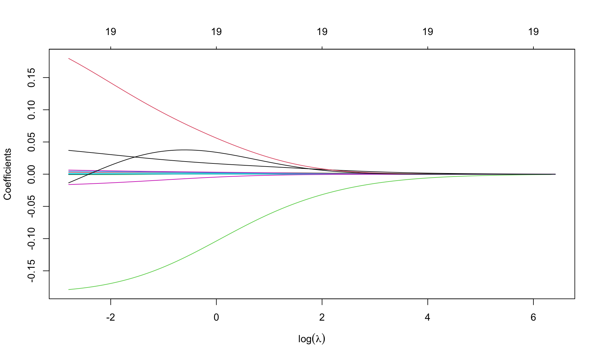
Option xvar='lambda' specifies that the x-axis is expressed in terms of \(\lambda\). Alternatives are deviance values and \(L_1\)-norm values.
Option xlab=expression(log(lambda)) insert the mathematical symbol for \(\lambda\) in the axis. Numbers (19, repeated) over the graph indicate the number of covariates entering the model as \(\lambda\) varies: 19 is repeated, as ridge regression is not a selection method.
Look for the best \(\lambda\) using cross validation, using function cv.glmnet(), with a syntax similar to that in glmnet(). Fix the seed
set.seed(123)
cv.ridge <- cv.glmnet(X, y, alpha=0)For default, R considers \(10-\)fold cross validation. The resulting object includes several quantities, such as
cvmcvm within 1 standard error.Graphical representation
plot(cv.ridge,sign.lambda =1, xlab=expression(log(lambda)))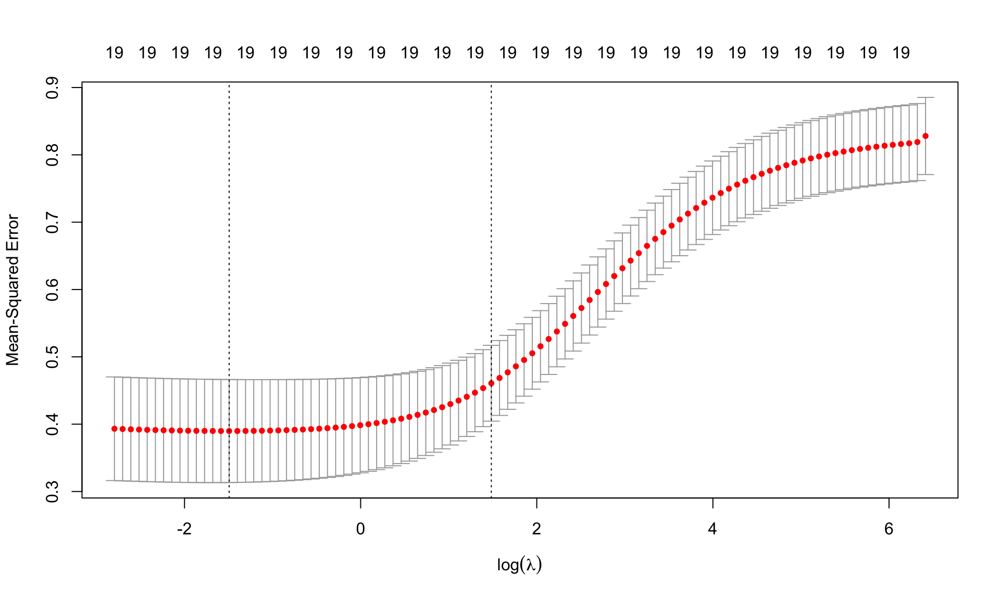
The plots shows the values of MSE cvm for each \(\log(\lambda)\) together with the associated confidence interval. The two dashed lines are the values of log(lambda.min) and log(lambda.1se).
\(\lambda\) from cross validation
(best.lambda <- cv.ridge$lambda.min)[1] 0.2246711(lambda.1se <- cv.ridge$lambda.1se)[1] 4.410385ind <- which(cv.ridge$lambda==best.lambda)
plot(cv.ridge,sign.lambda =1, xlab=expression(log(lambda)))
abline(h=cv.ridge$cvup[ind], col="blue")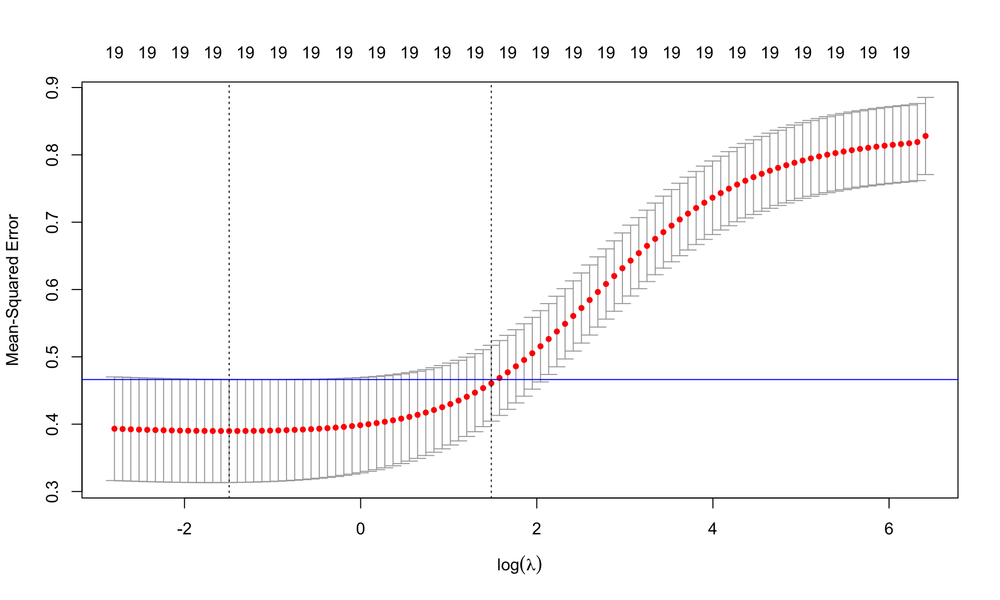
Find the minimum MSE
cv.ridge$cvm[ind][1] 0.3898321## or, equivalently,
min(cv.ridge$cvm)[1] 0.3898321Re-estimate the model using the best \(\lambda\)
m.ridge.min <- glmnet(X, y, alpha=0, lambda=best.lambda)
m.ridge.min
Call: glmnet(x = X, y = y, alpha = 0, lambda = best.lambda)
Df %Dev Lambda
1 19 57.13 0.2247Coefficients of the model
coef(m.ridge.min)20 x 1 sparse Matrix of class "dgCMatrix"
s0
(Intercept) 4.602315e+00
AtBat 1.834763e-04
Hits 2.125588e-03
HmRun -5.492596e-04
Runs 3.621911e-03
RBI 1.483989e-03
Walks 4.593315e-03
Years 2.603353e-02
CAtBat 3.990386e-05
CHits 1.749825e-04
CHmRun 2.758551e-04
CRuns 3.108771e-04
CRBI 1.776969e-04
CWalks 1.753579e-05
LeagueN 1.170669e-01
DivisionW -1.588782e-01
PutOuts 8.975081e-05
Assists 2.906300e-04
Errors -1.125927e-02
NewLeagueN 2.778177e-02We can use the predict() function to obtain the Ridge regression coefficients for a new value of lambda, say best.lambda:
predict (m.ridge, s=best.lambda, type ="coefficients")20 x 1 sparse Matrix of class "dgCMatrix"
s=0.2246711
(Intercept) 4.601096e+00
AtBat 1.829743e-04
Hits 2.135727e-03
HmRun -5.074681e-04
Runs 3.626481e-03
RBI 1.482032e-03
Walks 4.585321e-03
Years 2.620382e-02
CAtBat 4.004634e-05
CHits 1.739085e-04
CHmRun 2.668579e-04
CRuns 3.089330e-04
CRBI 1.778910e-04
CWalks 1.953547e-05
LeagueN 1.171582e-01
DivisionW -1.588772e-01
PutOuts 8.960028e-05
Assists 2.903550e-04
Errors -1.126613e-02
NewLeagueN 2.777435e-02Re-estimate the model using lambda.1se. Comprare to the coefficients of Ridge regression using best.lambda. What do you notice?
Graphical representation of the coefficients for the best.lambda and model deviance
par(mfrow=c(1,2))
plot(m.ridge, xvar='lambda', sign.lambda =1, xlab=expression(log(lambda)))
abline(v=log(best.lambda), lty=2)
## deviance
plot(log(m.ridge$lambda), m.ridge$dev.ratio, type='l',
xlab=expression(log(lambda)), ylab='Explained deviance')
abline(v=log(best.lambda), lty=2)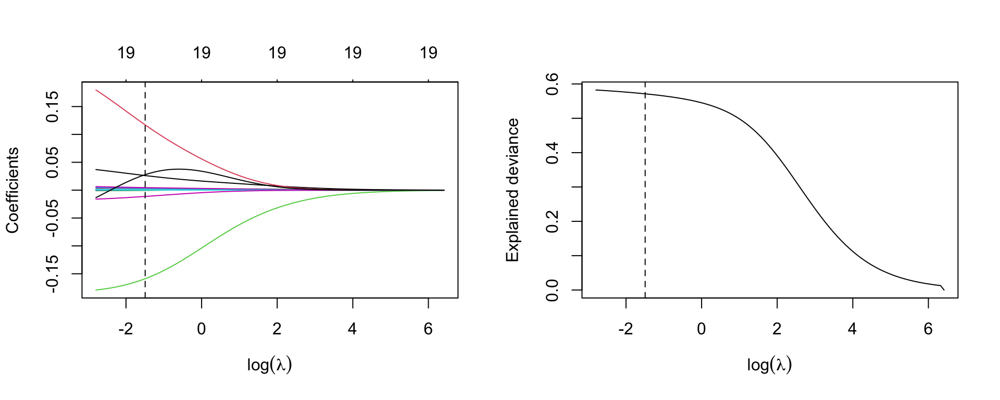
Now move to Lasso. The syntax is similar to that for Ridge regression, but specifying alpha=1
m.lasso <- glmnet(X, y, alpha=1)Graphical representation of the coefficients
par(mfrow=c(1,1))
plot(m.lasso, xvar='lambda', sign.lambda =1, xlab=expression(log(lambda)))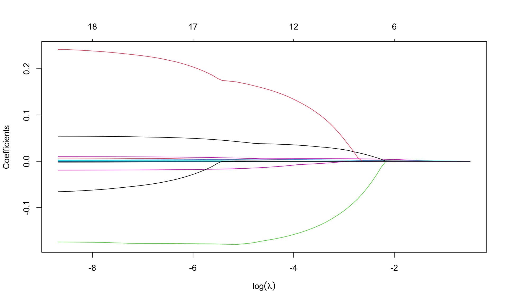
What do you notice about the values of coefficients?
Look for \(\lambda\) that minimizes the MSE
## fix the seed to the same value used for ridge regression
set.seed(123)
cv.lasso <- cv.glmnet(X, y, alpha=1)
plot(cv.lasso, sign.lambda =1, xlab=expression(log(lambda)))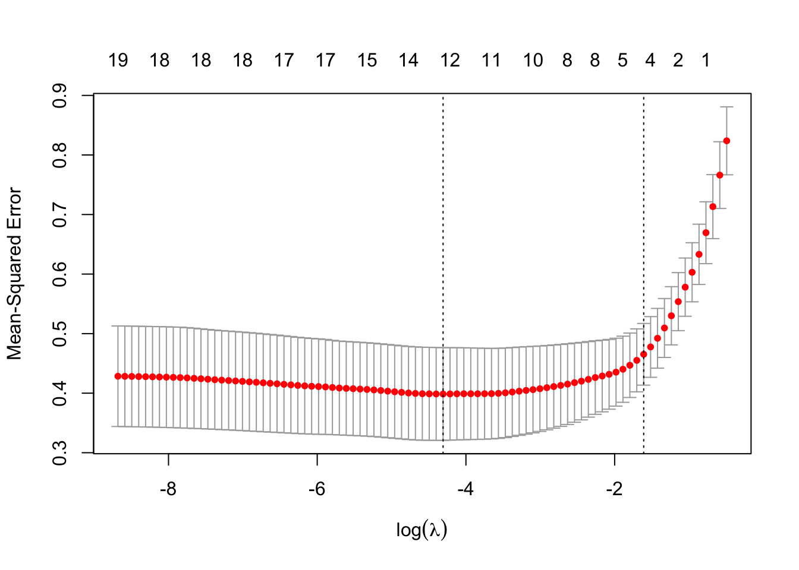
Minimum \(\lambda\) from cross validation
(best.lambda.lasso <- cv.lasso$lambda.min)[1] 0.01346868(lambda.1se.lasso <- cv.lasso$lambda.1se)[1] 0.2000056Minimum MSE
min(cv.lasso$cvm)[1] 0.3985837Re-estimate the model using the best lambda from cross-validation
m.lasso.min <- glmnet(X, y, alpha=1, lambda=best.lambda.lasso)
m.lasso.min
Call: glmnet(x = X, y = y, alpha = 1, lambda = best.lambda.lasso)
Df %Dev Lambda
1 12 57.67 0.01347Coefficients
coef(m.lasso.min)20 x 1 sparse Matrix of class "dgCMatrix"
s0
(Intercept) 4.539243e+00
AtBat .
Hits 2.926571e-03
HmRun .
Runs 4.180394e-03
RBI 6.978941e-04
Walks 5.637244e-03
Years 3.702355e-02
CAtBat .
CHits 4.515252e-04
CHmRun .
CRuns 1.554899e-04
CRBI .
CWalks .
LeagueN 1.481440e-01
DivisionW -1.660544e-01
PutOuts 5.538561e-05
Assists 1.928669e-04
Errors -1.119452e-02
NewLeagueN . Some of the coefficients are zero, so the Lasso performed a model selection.
Graphical representation of the coefficients for the best labmda and model deviance
par(mfrow=c(1,2))
plot(m.lasso, xvar='lambda', sign.lambda =1, xlab=expression(log(lambda)))
abline(v=log(best.lambda.lasso), lty=2)
## deviance
plot(log(m.lasso$lambda), m.lasso$dev.ratio, type='l',
xlab=expression(log(lambda)), ylab='Explained deviance')
abline(v=log(best.lambda.lasso), lty=2)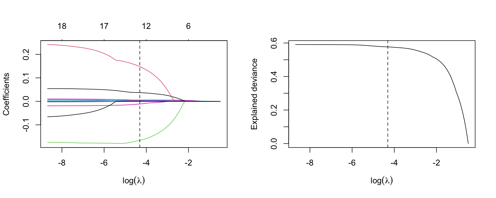
lambda=lambda.1se.lassom.lasso.1se <- glmnet(X, y, alpha=1, lambda=lambda.1se.lasso)
m.lasso.1se
Call: glmnet(x = X, y = y, alpha = 1, lambda = lambda.1se.lasso)
Df %Dev Lambda
1 4 46.07 0.2Coefficients
coef(m.lasso.1se)20 x 1 sparse Matrix of class "dgCMatrix"
s0
(Intercept) 5.1894774636
AtBat .
Hits 0.0018877447
HmRun .
Runs .
RBI .
Walks 0.0023221273
Years .
CAtBat .
CHits 0.0000801348
CHmRun .
CRuns 0.0010421218
CRBI .
CWalks .
LeagueN .
DivisionW .
PutOuts .
Assists .
Errors .
NewLeagueN . We evaluate Ridge and Lasso regression by calculating its MSE on the test set, using lambda equals to the best value obtained from cross-validation. We use the predict() function to get predictions for a test set, by replacing type="coefficients" with the newx argument.
y_test <- hitters_test$Salary
X_test <- model.matrix(Salary ~ ., data=hitters_test)[,-1]
ridge.pred <- predict (m.ridge, s=best.lambda, newx=X_test)
mean((ridge.pred - y_test)^2)[1] 0.4745414The test MSE is 0.4745414. Note that if we had instead simply fit a model with just an intercept, we would have predicted each test observation using the mean of the training observations. In that case, we could compute the test set MSE like this:
mean((mean(y) - y_test)^2)[1] 0.6426093or equivalent to fitting a ridge regression model with a very large value of lambda
ridge.pred1=predict (m.ridge,s=1e10 ,newx=X_test)
mean((ridge.pred1 - y_test)^2)[1] 0.6426093So fitting a ridge regression model with lambda=best.lambda leads to a lower test MSE than fitting a model with just an intercept. We now check the benefit to performing Lasso regression with lambda=best.lambda.lasso
Lasso.pred <- predict (m.lasso, s=best.lambda.lasso, newx=X_test)
mean((Lasso.pred - y_test)^2)[1] 0.4771632The result confirms that the model fitted with Lasso is preferable.
Refit Lasso regression with lambda=lambda.lasso.1se
Lasso.pred.se <- predict (m.lasso, s=lambda.1se.lasso, newx=X_test)
mean(( Lasso.pred.se - y_test)^2)[1] 0.4447958Refit Ridge and Lasso regression on the full data and calulate MSE for each model with lambda obtained from cross-validation. What do you notice? Does the result tell you the same story?
Consider the Leukemia data about the gene expression in cancer cells obtained from 72 subjects with acute myeloid leukemia and acute lymphoblastic leukemia.
Load the data
load("slides/data/Leukemia.RData")
names(Leukemia)[1] "x" "y"There are the objects x and y. Response y is categorical (diseased/nondiseased)
table(Leukemia$y)
0 1
47 25 Object x is the matrix with the observations for the covariates
dim(Leukemia$x)[1] 72 3571There are 3571 covariates. Clearly, a standard logistic regression model cannot work here. In fact, look at the output
m <- glm(y ~ x, data=Leukemia, family='binomial')here not reported for space reason. Use Ridge and lasso regression instead.
leukemia.ridge <- glmnet(Leukemia$x, Leukemia$y, alpha=0, family='binomial')Note that we specify family='binomial' as \(y\) is a binary indicator.
par(mfrow=c(1,1))
plot(leukemia.ridge, sign.lambda =1, xvar='lambda', xlab=expression(log(lambda)))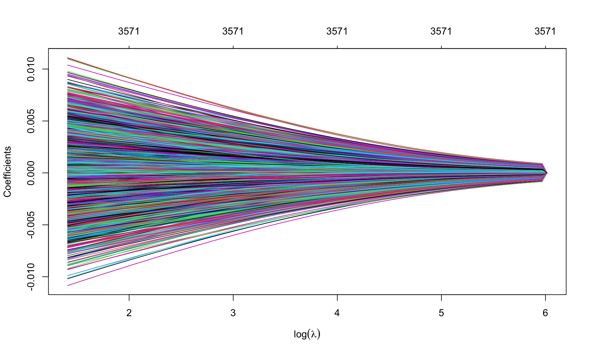
Which values of \(\lambda\) are used?
summary(leukemia.ridge$lambda) Min. 1st Qu. Median Mean 3rd Qu. Max.
4.093 12.946 40.942 89.194 129.462 409.310 Select the best value of \(\lambda\) using cross validation, previously extending the grid of values of \(\lambda\) through option
set.seed(123)
cv.leukemia.ridge <- cv.glmnet(Leukemia$x, Leukemia$y, alpha=0, family='binomial',
lambda.min = 1e-4)
(best.lambda.leukemia <- cv.leukemia.ridge$lambda.min)[1] 0.04093098min(cv.leukemia.ridge$cvm)[1] 0.1253959plot(cv.leukemia.ridge, sign.lambda =1)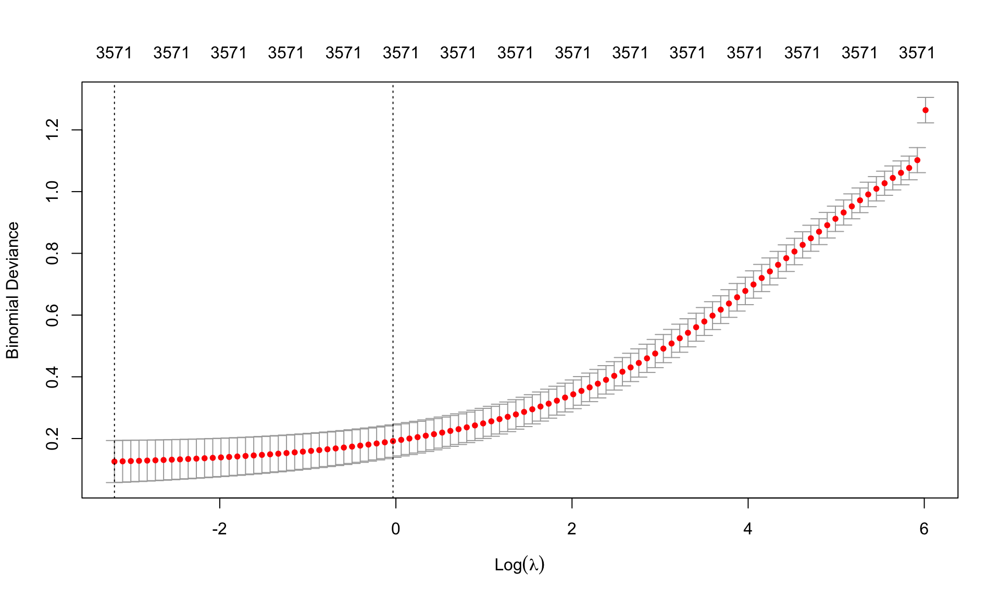
Re-estimate the model using the best \(\lambda\) chosen from cross-validation
leukemia.ridge.min <- glmnet(Leukemia$x, Leukemia$y, alpha=0, family='binomial',
lambda=best.lambda.leukemia)
leukemia.ridge.min
Call: glmnet(x = Leukemia$x, y = Leukemia$y, family = "binomial", alpha = 0, lambda = best.lambda.leukemia)
Df %Dev Lambda
1 3571 99.76 0.04093Graphical representation of the coefficients for the best \(\lambda\) and model deviance. Remember to extend the grid of values of \(\lambda\)
leukemia.ridge <- glmnet(Leukemia$x, Leukemia$y, alpha=0, family='binomial',
lambda.min = 1e-4)par(mfrow=c(1,2))
plot(leukemia.ridge, xvar='lambda', xlab=expression(log(lambda)))
abline(v=log(best.lambda.leukemia), lty=2)
## deviance
plot(log(leukemia.ridge$lambda), leukemia.ridge$dev.ratio, type='l',
sign.lambda =1, xlab=expression(log(lambda)), ylab='Explained deviance')
abline(v=log(best.lambda.leukemia), lty=2)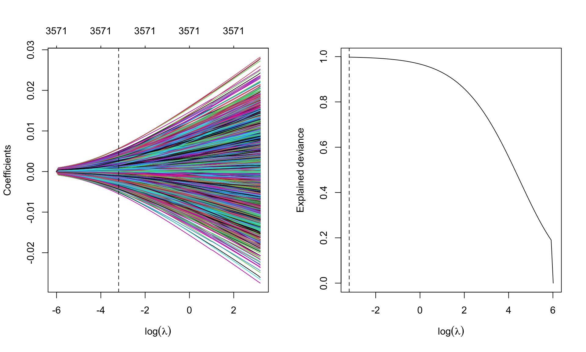
leukemia.lasso <- glmnet(Leukemia$x, Leukemia$y, alpha=1, family='binomial',
lambda.min = 1e-4)par(mfrow=c(1,1))
plot(leukemia.lasso, xvar='lambda', sign.lambda =1, xlab=expression(log(lambda)))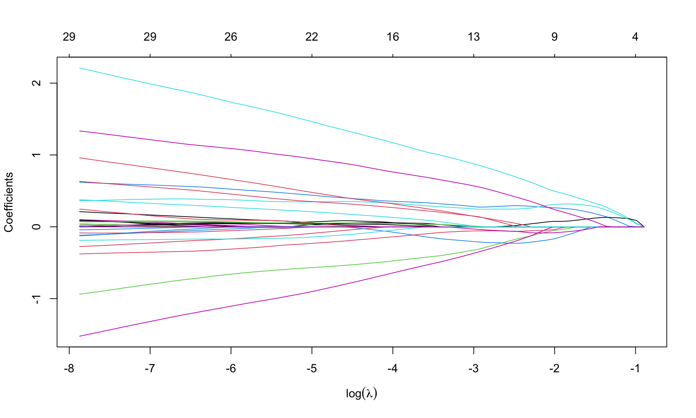
Select \(\lambda\) from cross validation
set.seed(123)
cv.leukemia.lasso <- cv.glmnet(Leukemia$x, Leukemia$y, alpha=1, family='binomial',
lambda.min = 1e-4)
(best.lambda.leukemia.lasso <- cv.leukemia.lasso$lambda.min)[1] 0.0003817237(lambda.leukemia.1se.lasso <- cv.leukemia.lasso$lambda.1se)[1] 0.02756354min(cv.leukemia.lasso$cvm)[1] 0.1720613plot(cv.leukemia.lasso, sign.lambda =1)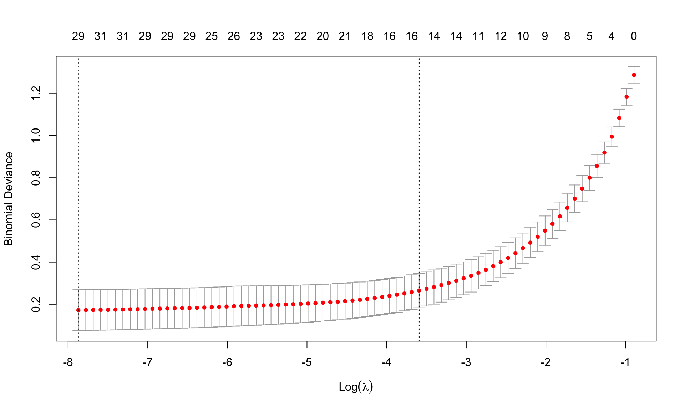
Re-estimate the model using the best \(\lambda\) from cross-validation
leukemia.lasso.min <- glmnet(Leukemia$x, Leukemia$y, alpha=1, family='binomial',
lambda=best.lambda.leukemia.lasso)
leukemia.lasso.min
Call: glmnet(x = Leukemia$x, y = Leukemia$y, family = "binomial", alpha = 1, lambda = best.lambda.leukemia.lasso)
Df %Dev Lambda
1 30 99.9 0.0003817How many coefficients are set equal to zero? None in ridge regression.
id.zero <- which(coef(leukemia.lasso.min)==0)
length(id.zero)[1] 3541nonzero <- length(coef(leukemia.lasso.min))-length(id.zero)
nonzero[1] 31There are 3541 zero coefficients, so lasso selects only 30 variables (we need to eliminate the intercept). The chosen variables are
varnames <- rownames(coef(leukemia.lasso.min))[-id.zero]
values <- coef(leukemia.lasso.min)[-id.zero]
names(values) <- varnames
values (Intercept) V158 V219 V456 V657 V672
-3.031146632 0.003568605 -0.245193058 -0.974262846 -0.105051860 -1.486415768
V888 V918 V926 V956 V979 V1007
0.161690544 0.209617719 0.051362087 0.670893605 2.189600799 0.046130612
V1219 V1569 V1652 V1835 V1946 V2230
-0.367200323 0.011167219 0.332043309 0.060130068 0.992660643 0.143028820
V2239 V2481 V2537 V2727 V2831 V2859
-0.121573634 1.243637531 0.006414938 -0.157861841 0.020748897 -0.079490071
V2888 V2929 V3038 V3098 V3125 V3158
0.370993478 0.107639742 0.162978944 0.607169957 0.031250694 0.077881558
V3181
-0.137068176 Try to see what happens when using lambda=lambda.1se
Boston dataset records housing values medv and other information for 506 neighborhoods around Boston. We aim to predict medv using 13 other variables as predictors.
MASS library using the function data().Perform Ridge and Lasso regression
medv as the response variable, and consider all other variables as predictors. Plot the coefficients versus \(L_1\) norm and \(\log(\lambda)\). Your comments?medv as the response variable, and consider all other variables as predictors. Plot the coefficients versus \(L_1\) norm and \(\log(\lambda)\). Your comments?On test dataset do what follows